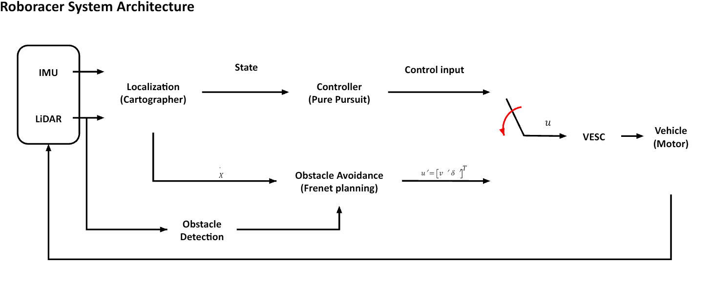
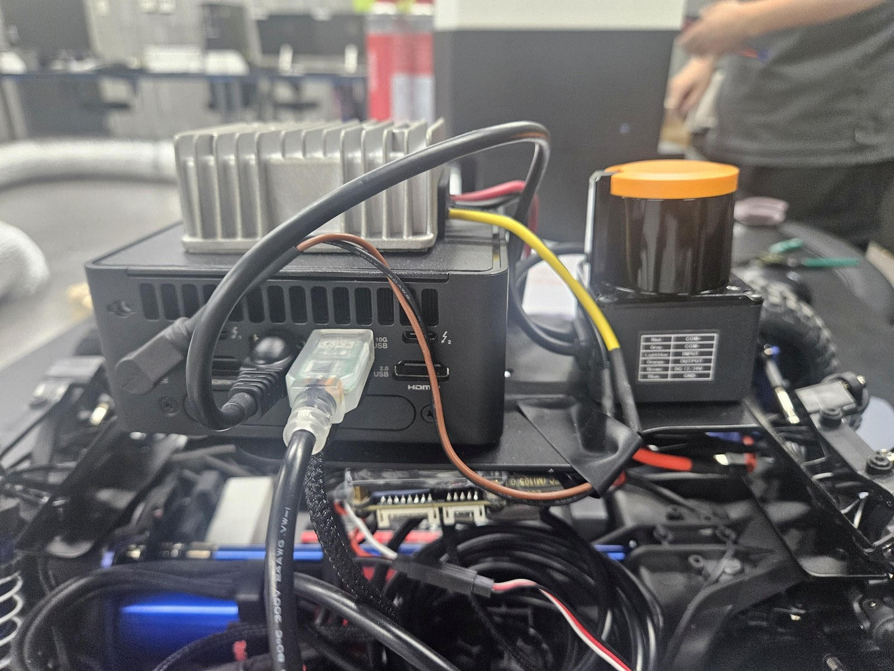
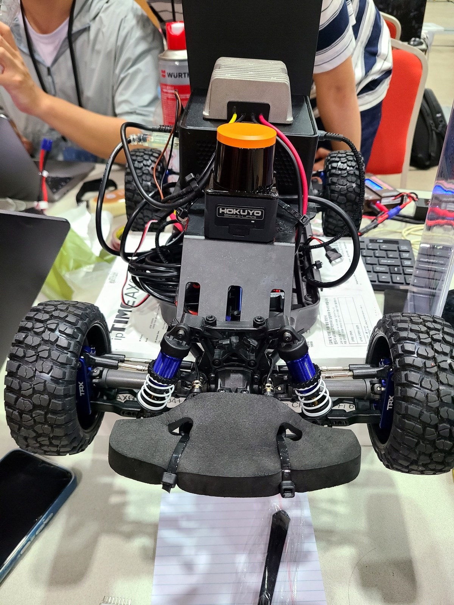
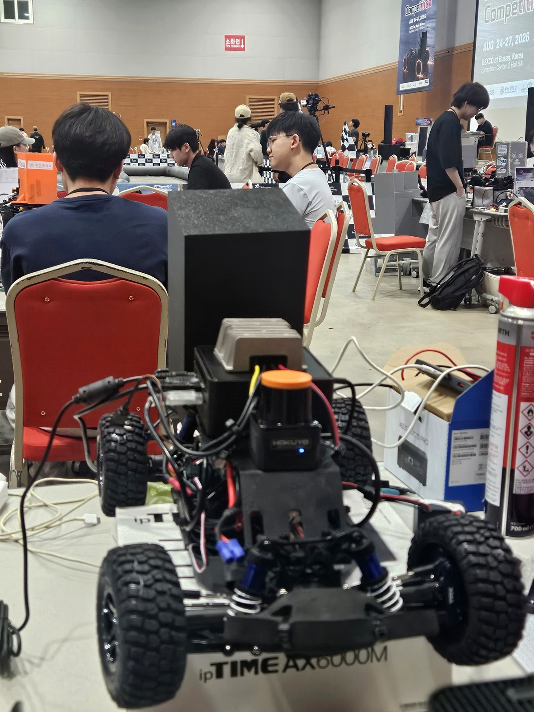
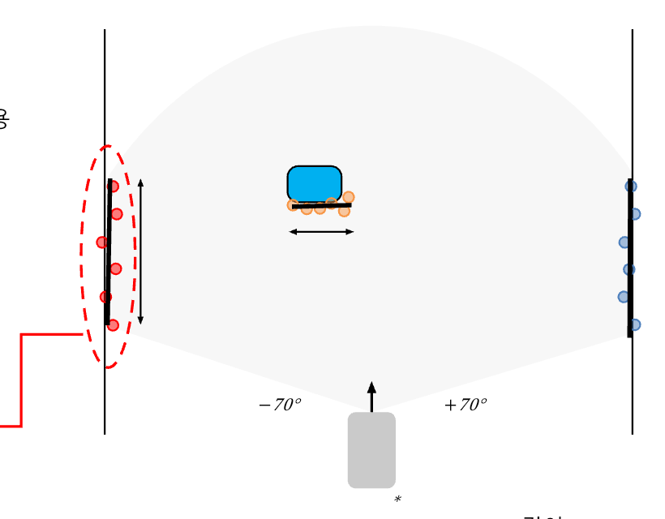
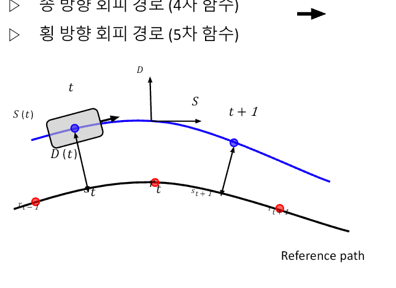
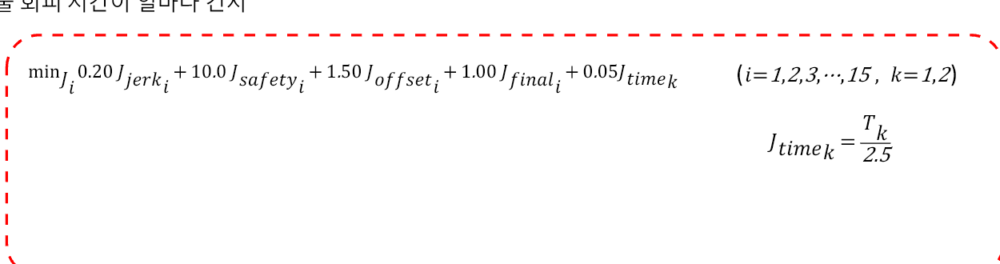

서로 가까운 LiDAR 점을 하나의 물체 후보로 군집화
29TH ROBORACER AUTONOMOUS RACING COMPETITION
IFAC 2026 RoboRacer 장애물 인지와 회피 경로계획
Hokuyo 2D LiDAR 점군에서 트랙 벽과 장애물을 구분하고, 최대 30개 Frenet 후보 가운데 충돌하지 않으면서 기준 경로로 복귀할 수 있는 경로를 선택한 ROS 2 실차 모듈.
TOP 16국제 자율주행 경주
56개 팀 중 16강 진출
56개 팀 중 16강 진출
- 대회
- IFAC 2026, 부산 BEXCO
- 기간
- 2026.07–08
- 담당
- LiDAR 인지, Frenet 로컬 경로계획
- 팀
- 학생 5인, 지도교수 1인

01 / SYSTEM
전체 시스템과 담당 범위
IMU와 LiDAR 기반 위치추정, 장애물 인지, 회피 경로계획, Pure Pursuit 제어로 이어지는 전체 구성. 이 가운데 Perception과 FrenetPlanner 구현 담당.

담당 1Perception
LiDAR 점군 군집화, RANSAC 선분 추출, 벽과 장애물 구분
담당 2FrenetPlanner회피 후보 생성, 충돌 검사, 비용 비교와 최종 경로 선택
02 / VEHICLE
경기 차량 구성
 Hokuyo LiDAR
Hokuyo LiDAR
Intel NUC
구동부
피탐지 패널03 / PERCEPTION
벽과 장애물 구분
LiDAR 전방 점군을 가까운 점끼리 묶고, 각 군집에 RANSAC을 적용해 선분의 길이와 방향을 계산했다. 트랙을 따라 길게 이어지는 선분은 벽, 차량과 장애물처럼 짧게 관측되는 선분은 장애물로 구분해 Frenet 플래너에 전달.

각 군집에 RANSAC을 적용해 관측 형상과 길이 계산
벽과 장애물을 구분해 서로 다른 안전영역으로 변환
실차에서 확인한 문제
펜스가 끊긴 구간에서도 떨어진 점군이 하나의 긴 선분으로 묶이면, 실제 통로가 벽으로 인식되어 모든 회피 후보가 탈락. 인접 점 사이의 큰 공백에서 선분을 나눠 통로 유지.
04 / PLANNING
Frenet 후보 선택


05 / FIELD VIDEO
실차 주행
06 / TROUBLESHOOTING
실차에서 바뀐 설계
유령 벽
서로 떨어진 안전펜스 점군이 하나의 RANSAC 선분으로 연결돼 통로 폐쇄.
인라이어 간격 기반 선분 분할영구 EMERGENCY
경로 밖 정지 상태에서 후보가 모두 탈락하고, 움직이지 못해 복귀 조건도 충족하지 못하는 교착.
복귀 전용 장기 지평선과 raw LiDAR creep코너 안쪽 충돌
기준 경로 corridor와 Pure Pursuit 실제 커팅 궤적 사이의 사각지대 발생.
장애물 corridor 0.25 m에서 0.40 m로 확대계획 주기 부족
후보 39개와 RANSAC 120회 구성에서 계획시간 약 160 ms 발생.
후보 30개와 RANSAC 60회로 축소07 / RESULT
경기 결과와 후속 개선
16강
56개 팀 참가 국제 자율주행 경주
2026년 8월 24–27일 , 부산 BEXCO
- 경기 결과예선 통과와 16강 진출, LiDAR 인지, Frenet 경로계획 실차 운용
- 탈락 원인충돌 직후 Cartographer 위치추정이 무너지며 차량이 기준 경로를 잃고 후속 주행 중단
- 대회 후 검증연구실에서 Particle Filter를 적용해 충돌 뒤 초기 위치 복구 성능 확인
- 후속 설계Particle Filter로 자세를 먼저 안정화한 뒤 인식 신뢰도가 확보되면 Cartographer로 전환하는 복구 절차 설계
정상 주행 정확도만으로 위치추정 방식을 고르면 충돌 이후 복구가 늦어진다는 확인. 대회 결과를 모듈 종료가 아닌 복구 상태 설계의 입력으로 반영.